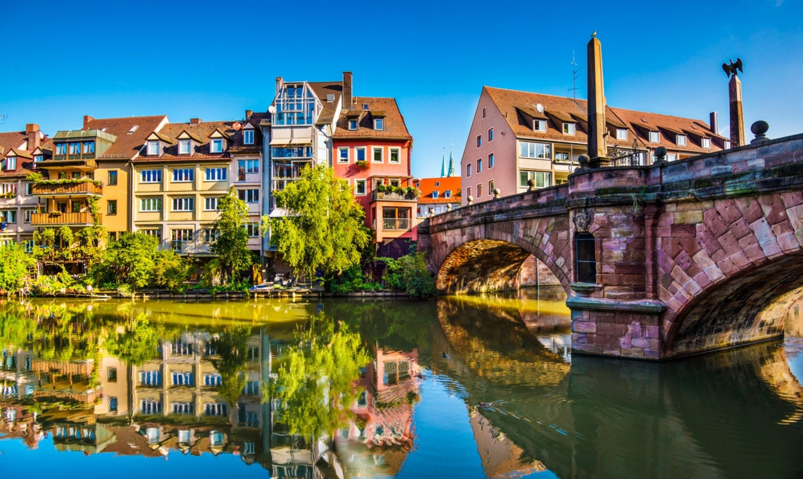
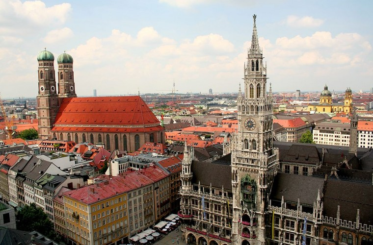
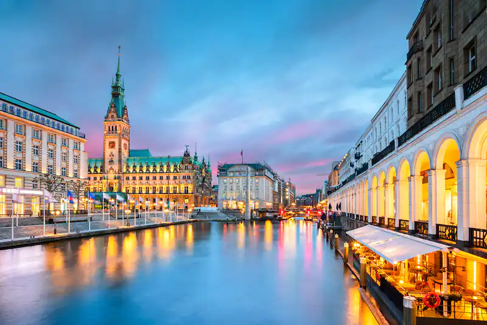
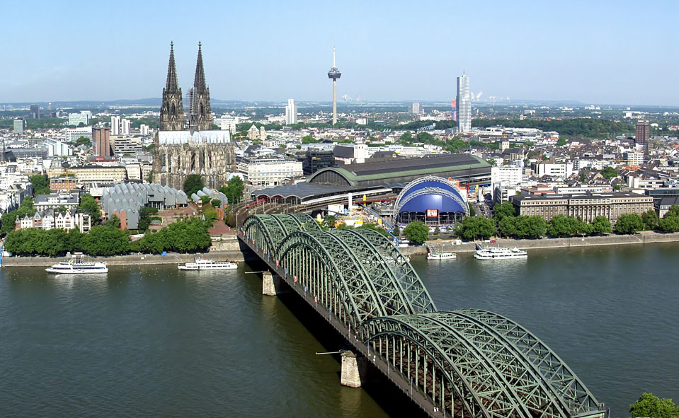

ALEMANIA Y SUS CIUDADES


Antes de Berlín, hubo otras cinco capitales alemanas: Aquisgrán, Ratisbona, Frankfurt-am-Main, Nuremberg y Bonn.
El 65% de los tramos de las autopistas alemanas no tienen límite de velocidad.
Hay más de 1.500 cervezas diferentes en el país.
Es uno de los mayores productores de automóviles del mundo.
Baja Sajonia fue el último estado en eliminar la matrícula universitaria pública.
Si eres un amante de los castillos, Alemania te va a encantar.
Capitales
Nuremberg 
Acerca de nosotros
El sector puede contribuir a la renovación urbana y al desarrollo rural, y a reducir los desequilibrios regionales, brindando a las comunidades la oportunidad de prosperar en su lugar de origen. El turismo es también un medio efectivo para que los países en desarrollo participen en la economía mundial.
Munich
Berlín

Hamburgo
Colonia
Stuttgart

Redes sociales